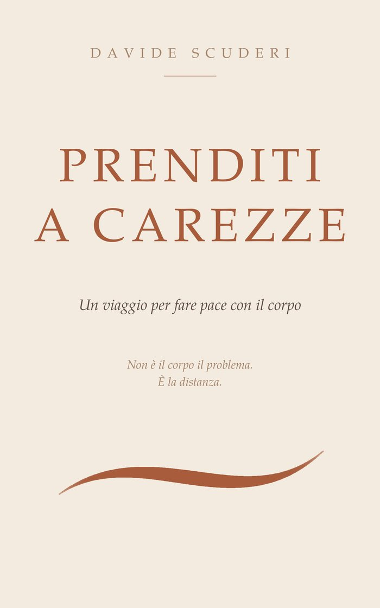

Non è il corpo il problema.
È la distanza.
Prenditi
a carezze
Un invito a ridurre quella distanza.
Un libro per smettere di trattarti come un nemico. E iniziare ad abitarti.
76 pagine · si legge in un'ora · l'ebook si legge qui, nel browser · tutti e tre a 9,99 €

Dalla quarta di copertina
Attraverso pratiche semplici e riflessioni essenziali, un ritorno al contatto.
Alla presenza. Alla riconciliazione.
Che libro è
Non chiede di essere applicato. Chiede di essere attraversato.
Non è un manuale
Nessuno schema da seguire, nessun risultato da raggiungere. Le pratiche che ci sono si fanno in un minuto, con una mano.
Non è una terapia
Non sostituisce percorsi medici o psicologici, e non dà diagnosi. Se durante la lettura emerge qualcosa di grosso, il libro stesso ti dice di cercare aiuto.
È un racconto
Un viaggio narrativo e corporeo: si legge come una storia, e la storia è la tua distanza dal tuo corpo che si accorcia pagina dopo pagina.
Una lettrice
Quello che ha scritto chi l'ha letto per primo.
«Mi sono rivista in tanti passaggi.
Una descrizione fedele di ciò che si prova:
la stanchezza che non si riesce a spiegare
e il corpo che, poco alla volta, non sta più al passo
e chiede solo una cosa: presenza, ascolto.
Sull'armatura devo ancora lavorarci.
Ma almeno ora la riconosco.»
Una lettrice della bozza · febbraio 2026
Formati
Come vuoi leggerlo.
Com'è fatto
La scheda.
| Titolo | Prenditi a carezze |
|---|---|
| Autore | Davide Scuderi |
| Pagine | 76 |
| Formato | 12,7 × 20,3 cm, brossura, carta crema |
| Edizioni | Cartaceo e ebook |
| Genere | Narrativa del corpo · pratiche di contatto |
| Tempo di lettura | Circa un'ora |
Una nota per chi legge
Quello che il libro non fa.
Non è un manuale. Non è una terapia. Non è una promessa di cambiamento. Non sostituisce percorsi medici, psicologici o terapeutici, né intende fornire diagnosi o indicazioni cliniche.
Se durante la lettura emergono emozioni, ricordi o sensazioni intense, è importante ascoltarsi e, se serve, cercare il supporto di professionisti qualificati.
Un estratto, per intero
La distanza fra te
e il tuo corpo.
Non è il corpo il problema.
Non è un nemico dentro il quale sei intrappolato.
È solo che fra te e il tuo corpo
si è aperto uno spazio.
E in quello spazio
è cresciuto qualcosa di opaco.
Dieci pagine, gratis, in PDF. Nessuna newsletter settimanale: ti scrivo quando c'è qualcosa da dirti, e basta.
Fatto. Controlla la posta: arriva entro un minuto.
La mail serve per mandarti l'estratto e, ogni tanto, una pagina nuova. Un clic per cancellarti, in fondo a ogni messaggio. Non la do a nessuno.